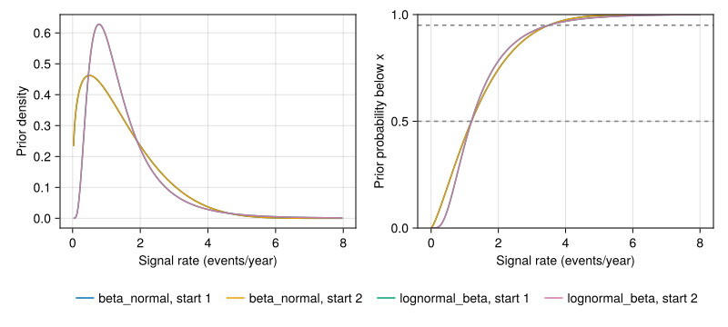
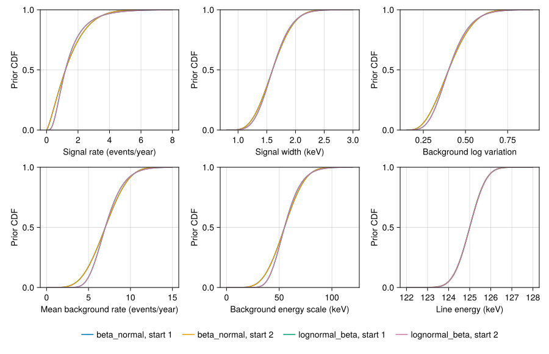
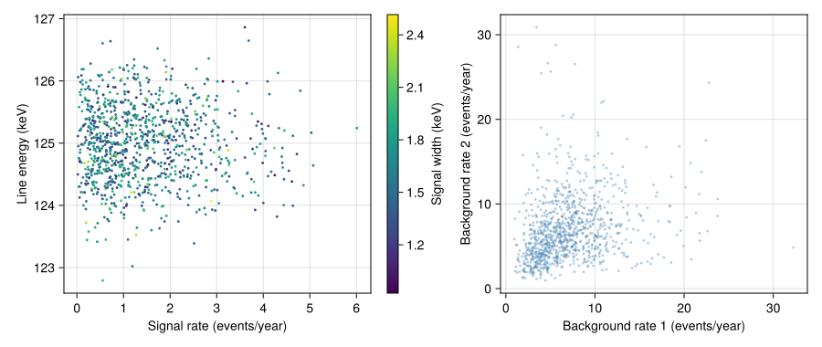
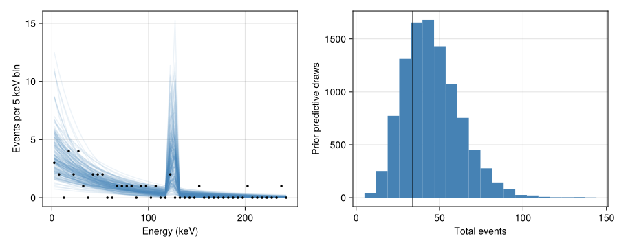

Prior elicitation for a signal-background model
A rare-event search distinguishes a narrow Gaussian signal from an exponential background. This example defines the model and fits priors to expert judgments about its parameters. It compares two families, revises a judgment, selects a prior, and examines prior predictions.
Run the example from the package directory with Julia 1.13 or later:
julia --project=examples -e 'using Pkg; Pkg.instantiate()'
julia --project=examples examples/scalar.jlFigures are saved in elicitation-output in the working directory.
using Credence, MeasureBase, Optimization, OptimizationOptimJL, RandomModel and candidate definitions
A rare-event experiment searches for a narrow Gaussian signal over an exponential background. Five datasets have different exposures and detection efficiencies. The hierarchy follows the BAT.jl example, with different experimental settings, simulated data, and prior judgments. Here both the signal location and detector resolution are uncertain.
Parameters and units
Exposure is in years, rates in events/year, and energy in keV. The signal rate S applies before detection efficiency. The bounds below represent external knowledge about possible parameter values. Quantile judgments describe probability within these bounds.
using Credence, MeasureBaseusing Distributions: Beta, Exponential, LocationScale, LogNormal, MixtureModel, Normal, Poisson, logpdfconst experiment = (exposure=(1.8, 1.5, 1.1, 0.8, 0.5), efficiency=(0.52, 0.61, 0.72, 0.81, 0.90))const prior_bounds = ( S=(0.0, 8.0), width=(0.8, 3.0), sigma_B=(0.15, 0.9), m_B=(0.001, 15.0), lam=(0.001, 120.0), mu=(122.0, 128.0),)const strength_bounds = prior_bounds.Sconst location_bounds = prior_bounds.muconst location_interval = (124.0, 126.0)const location_center = sum(location_bounds) / 2Background hierarchy
Each dataset has a background rate B[i]. Conditional on m_B and sigma_B, these rates are independent LogNormal variables. The correction to the log location gives each rate conditional mean m_B. The parameter sigma_B is their log standard deviation.
function background_parameters(rng, hyperparameters) law = LogNormal( log(hyperparameters.m_B) - hyperparameters.sigma_B^2 / 2, hyperparameters.sigma_B, ) B = rand(rng, law, length(experiment.exposure)) return (; hyperparameters..., B)endCounts and event energies
Expected background counts equal exposure times background rate. Expected signal counts also include detection efficiency. Their sum is the mean of the observed Poisson count. Each event energy follows a mixture of the exponential background and Gaussian signal, weighted by their expected counts. The exponential scale lam is its mean energy in keV. Every event energy enters the likelihood, including energies outside the plotted range.
function expected_yields(parameters) background = experiment.exposure .* parameters.B signal = experiment.exposure .* experiment.efficiency .* parameters.S return background, signalendfunction energy_law(parameters, background, signal) return MixtureModel( [Exponential(parameters.lam), Normal(parameters.mu, parameters.width)], [background, signal] ./ (background + signal), )endfunction simulate_spectrum(rng, parameters) background, signal = expected_yields(parameters) counts, dataset, energy = Int[], Int[], Float64[] for i in eachindex(background) n = rand(rng, Poisson(background[i] + signal[i])) push!(counts, n) append!(dataset, fill(i, n)) append!(energy, rand(rng, energy_law(parameters, background[i], signal[i]), n)) end return (; counts, dataset, energy)endfunction spectrum_loglikelihood(parameters, data) background, signal = expected_yields(parameters) laws = energy_law.(Ref(parameters), background, signal) counts = sum(logpdf.(Poisson.(background .+ signal), data.counts)) energies = sum(logpdf(laws[i], energy) for (i, energy) in zip(data.dataset, data.energy)) return counts + energiesendThe likelihood combines the Poisson counts and mixture densities of individual energies. MixtureModel evaluates in log space to handle small scales and zero signal rates. Counts and energy rows must describe the same events in each dataset.
Prior families
We compare two joint hyperpriors. One uses scaled Beta distributions for the five positive parameters and a truncated Normal for the signal location. The other uses truncated LogNormal distributions and a symmetric scaled Beta location distribution. Both location families are symmetric about 125 keV. Both joint hyperpriors assume independent hyperparameters. The conditional background rates become dependent through their shared uncertain mean and log standard deviation.
scaled_beta(bounds, a, b) = LocationScale(first(bounds), last(bounds) - first(bounds), Beta(exp(a), exp(b)))scaled_beta (generic function with 1 method)Family descriptors supply parameter transforms and starting values. A custom builder gives the location Beta distribution equal shape parameters, enforcing symmetry.
function signal_candidates() return ( :S => ( :beta => ScaledBetaFamily(prior_bounds.S...), :lognormal => TruncatedFamily(LogNormal, prior_bounds.S...), ), :width => ( :beta => ScaledBetaFamily(prior_bounds.width...), :lognormal => TruncatedFamily(LogNormal, prior_bounds.width...), ), :sigma_B => ( :beta => ScaledBetaFamily(prior_bounds.sigma_B...), :lognormal => TruncatedFamily(LogNormal, prior_bounds.sigma_B...), ), :m_B => ( :beta => ScaledBetaFamily(prior_bounds.m_B...), :lognormal => TruncatedFamily(LogNormal, prior_bounds.m_B...), ), :lam => ( :beta => ScaledBetaFamily(prior_bounds.lam...), :lognormal => TruncatedFamily(LogNormal, prior_bounds.lam...), ), :mu => ( :normal => TruncatedFamily( NormalFamily(location=location_center), location_bounds..., ), Candidate( :beta, p -> asmeasure(scaled_beta(location_bounds, p.log_shape, p.log_shape)), ((log_shape=log(12.0),), (log_shape=log(8.0),)), ), ), )endfunction signal_combinations() return ( :beta_normal => Independent( :S => :beta, :width => :beta, :sigma_B => :beta, :m_B => :beta, :lam => :beta, :mu => :normal, ), :lognormal_beta => Independent( :S => :lognormal, :width => :lognormal, :sigma_B => :lognormal, :m_B => :lognormal, :lam => :lognormal, :mu => :beta, ), )endEach combination lists one family for each parameter. Independent forms their product. The following functions summarize fitted targets and solver outcomes for these combinations.
function target_summary(report, id) result = only(filter(r -> r.id == id, report.results)) return map(report.problem.beliefs) do belief achieved = evaluate(belief.statistic, result.measure).value (; id=belief.id, target=belief.target, achieved, scale=belief.scale) endendfunction prior_summary(report) return map(report.results) do result if result.error !== nothing return (; id=result.id, error=result.error) end rows = target_summary(report, result.id) residual = maximum(abs(row.achieved - row.target) / row.scale for row in rows) return (; id=result.id, max_scaled_residual=residual, solver=string(result.solver.retcode), ) endendPlotting functions
using CairoMakieusing Distributions: cdffunction feedback(report, field, bounds; xlabel, levels) figure = Figure(; size=(800, 360)) density = Axis(figure[1, 1]; xlabel, ylabel="Prior density") probability = Axis(figure[1, 2]; xlabel, ylabel="Prior probability below x") points = range(bounds...; length=303) for result in report.results result.error === nothing || continue prior = getproperty(marginals(result.measure), field) label = "$(result.id[1]), start $(result.id[2])" interior = points[2:(end-1)] lines!( density, interior, exp.(MeasureBase.logdensityof.(Ref(prior), interior)); label, ) values = [evaluate(Probability(-Inf, x), prior).value for x in points] lines!(probability, points, values) end hlines!(probability, collect(levels); color=:gray, linestyle=:dash) ylims!(probability, 0, 1) Legend(figure[2, 1:2], density; orientation=:horizontal, framevisible=false) return figureendfunction hyperprior_feedback(report) figure = Figure(; size=(900, 580)) axes = Axis[] labels = ( "Signal rate (events/year)", "Signal width (keV)", "Background log variation", "Mean background rate (events/year)", "Background energy scale (keV)", "Line energy (keV)", ) for (i, field) in enumerate(keys(prior_bounds)) axis = Axis(figure[(i-1)÷3+1, (i-1)%3+1]; xlabel=labels[i], ylabel="Prior CDF") push!(axes, axis) points = range(getproperty(prior_bounds, field)...; length=201) for result in report.results result.error === nothing || continue law = getproperty(marginals(result.measure), field) values = [evaluate(Probability(-Inf, x), law).value for x in points] lines!(axis, points, values; label="$(result.id[1]), start $(result.id[2])") end ylims!(axis, 0, 1) end Legend(figure[3, 1:3], first(axes); orientation=:horizontal, framevisible=false) return figureendfunction joint_feedback(rng, prior; ndraws=1000) draws = [background_parameters(rng, rand(rng, prior)) for _ in 1:ndraws] figure = Figure(; size=(900, 380)) signal = Axis(figure[1, 1]; xlabel="Signal rate (events/year)", ylabel="Line energy (keV)") background = Axis( figure[1, 3]; xlabel="Background rate 1 (events/year)", ylabel="Background rate 2 (events/year)", ) points = scatter!( signal, [p.S for p in draws], [p.mu for p in draws]; color=[p.width for p in draws], markersize=4, ) Colorbar(figure[1, 2], points; label="Signal width (keV)") scatter!( background, [p.B[1] for p in draws], [p.B[2] for p in draws]; color=(:steelblue, 0.4), markersize=4, ) return figureendfunction spectrum_feedback(rng, prior, data; ndraws=10_000, ncurves=200) lower = min(0.0, 5floor(minimum(data.energy) / 5)) upper = max(200.0, 5ceil(maximum(data.energy) / 5) + 5) edges = collect(lower:5.0:upper) centres = (edges[1:(end-1)] .+ edges[2:end]) ./ 2 observed = [count(e -> edges[i] <= e < edges[i+1], data.energy) for i in eachindex(centres)] figure = Figure(; size=(900, 360)) spectrum = Axis(figure[1, 1]; xlabel="Energy (keV)", ylabel="Events per 5 keV bin") totals = Axis(figure[1, 2]; xlabel="Total events", ylabel="Prior predictive draws") draws = Int[] for i in 1:ndraws parameters = background_parameters(rng, rand(rng, prior)) background, signal = expected_yields(parameters) if i <= ncurves background_mass = diff(cdf.(Ref(Exponential(parameters.lam)), edges)) signal_mass = diff(cdf.(Ref(Normal(parameters.mu, parameters.width)), edges)) expected = sum(background) .* background_mass .+ sum(signal) .* signal_mass lines!(spectrum, centres, expected; color=(:steelblue, 0.1)) end push!(draws, sum(rand.(Ref(rng), Poisson.(background .+ signal)))) end scatter!(spectrum, centres, observed; color=:black, markersize=5) hist!(totals, draws; bins=20, color=:steelblue) vlines!(totals, [sum(data.counts)]; color=:black) return figureendElicit the hyperparameters
The expert supplies judgments for signal rate S, line location mu, resolution width, background log standard deviation sigma_B, mean background rate m_B, and background energy scale lam. Resolution describes the spread of signal energies around the line location. Its prior describes uncertainty about that spread.
For each positive parameter, elicit a median and 95% upper quantile. For location, elicit the probability of lying between 124 and 126 keV. Here that probability is 90%. The statements below represent information from calibration or earlier experiments, independent of the search observations. Their scales set the units of fitting discrepancies.
initial_beliefs = ( :S => ( Approximate(:median, Quantile(0.5), 1.2; scale=1.0), Approximate(:upper, Quantile(0.95), 5.0; scale=1.0), ), :mu => (Approximate(:central, Probability(location_interval...), 0.9; scale=0.1),), :width => ( Approximate(:median, Quantile(0.5), 1.6; scale=0.25), Approximate(:upper, Quantile(0.95), 2.1; scale=0.25), ), :sigma_B => ( Approximate(:median, Quantile(0.5), 0.4; scale=0.1), Approximate(:upper, Quantile(0.95), 0.6; scale=0.1), ), :m_B => ( Approximate(:median, Quantile(0.5), 7.0; scale=2.0), Approximate(:upper, Quantile(0.95), 10.5; scale=2.0), ), :lam => ( Approximate(:median, Quantile(0.5), 55.0; scale=15.0), Approximate(:upper, Quantile(0.95), 80.0; scale=15.0), ),)initial_problem = Elicitation(initial_beliefs, signal_candidates(); combinations=signal_combinations())Fit the candidate priors
Fit both combinations to the judgments. The summaries show the largest scaled residual, solver outcome, and achieved statistics for each starting point.
initial_report = fit(Xoshiro(42), initial_problem, NelderMead(); maxiters=20000, g_tol=1e-12)display(collect(prior_summary(initial_report)))display(collect(target_summary(initial_report, (:beta_normal, 1))))Review a judgment
The fitted priors imply probabilities for other ranges. For example, evaluate the probability that the signal rate lies near its upper bound, between 6 and 8 events/year. Discuss whether these probabilities agree with the expert's knowledge.
near_cap = [ (result.id, evaluate(Probability(6.0, 8.0), marginals(result.measure).S).value) for result in initial_report.results]display(near_cap)effective_exposure = sum(experiment.exposure .* experiment.efficiency)display(initial_problem[:S, :upper].target * effective_exposure)Multiplying the rate quantile by effective exposure gives a quantile of expected signal yield. Realized signal counts also vary according to their Poisson law. Suppose this discussion leads the expert to revise the 95% rate quantile from 5 to 3.5 events/year. Record the reason, preserve the initial problem, and fit the revision.
revision_reason = "The expert revised the upper rate quantile after reviewing external rate knowledge and its expected-yield implication."problem = replace(initial_problem, :S => Approximate(:upper, Quantile(0.95), 3.5; scale=1.0))report = fit(Xoshiro(42), problem, NelderMead(); maxiters=20000, g_tol=1e-12)display((original=initial_problem[:S, :upper].target, revised=problem[:S, :upper].target))display(collect(prior_summary(report)))all(result -> result.error === nothing, report.results) || error("Inspect failed starts before continuing.")display(collect(target_summary(report, (:beta_normal, 1))))comparison = compare(report)display(comparison.incomparable)Compare the revised fits by their discrepancies, then review the distributional assumptions.
Plot the fitted priors
Each curve represents a fitted candidate. The density plot excludes endpoints because a continuous Beta density may diverge there while assigning zero mass to the boundary.
mkpath("elicitation-output")strength_figure = feedback( report, :S, strength_bounds; xlabel="Signal rate (events/year)", levels=(0.5, 0.95),)save("elicitation-output/signal-prior.svg", strength_figure);marginal_figure = hyperprior_feedback(report)save("elicitation-output/hyperpriors.svg", marginal_figure);

The upper quantile describes prior uncertainty about the signal rate. A posterior limit would also depend on the search data. These continuous priors give zero mass to exactly S = 0. Comparing a background-only hypothesis requires a separate null model.
Validate and select a prior
Validation evaluates the fitted judgments again. Approximate targets receive status :target, and the candidate supports enforce the parameter bounds. Review the achieved values and family assumptions before recording a selection.
validation = validate(Xoshiro(43), report)display([[check.status for check in row] for row in validation.checks])decision = ( id=(:beta_normal, 1), rationale="The expert accepts the bounded Beta hyperparameters and calibrated Normal location after reviewing both alternatives.",)selection = select(report, decision.id; validation, rationale=decision.rationale)prior = measure(selection)Generate data from the model
The selected measure describes the six hyperparameters. Draw background rates conditional on their shared hyperparameters to obtain all eleven model parameters. Fixed generating values and seeds make the synthetic dataset below reproducible.
truth = (S=0.8, mu=125.4, width=1.6, sigma_B=0.35, m_B=7.0, lam=55.0)truth_parameters = background_parameters(Xoshiro(2026), truth)data = simulate_spectrum(Xoshiro(2027), truth_parameters)display(( exposure=experiment.exposure, efficiency=experiment.efficiency, counts=data.counts, events=length(data.energy),))rng = Xoshiro(44)hyperparameters = rand(rng, prior)parameters = background_parameters(rng, hyperparameters)display(( S=parameters.S, mu=parameters.mu, width=parameters.width, B=parameters.B, loglikelihood=spectrum_loglikelihood(parameters, data),))Paired draws show the joint prior. The left panel displays signal rate and location, with signal width shown by colour. These hyperparameters are independent by assumption. The right panel displays two background rates. Their shared uncertain hyperparameters induce dependence. Their covariance is the prior variance of m_B.
joint_figure = joint_feedback(Xoshiro(46), prior)save("elicitation-output/joint-prior.svg", joint_figure);
The likelihood evaluates the dataset counts and each event energy. lam is the mean scale of the exponential background in keV. Histogram bins serve only the figures.
Examine prior predictions
Generate 10,000 draws from the hierarchical prior and observation model. The left panel shows expected binned spectra for the first 200 draws, with synthetic observations in black. The right panel uses all 10,000 draws to show the distribution of total event counts. These plots describe how the chosen prior translates into observable quantities. Further prior revisions should use information independent of the search observations.
predictive_figure = spectrum_feedback(Xoshiro(45), prior, data; ndraws=10_000)save("elicitation-output/prior-predictive.svg", predictive_figure);